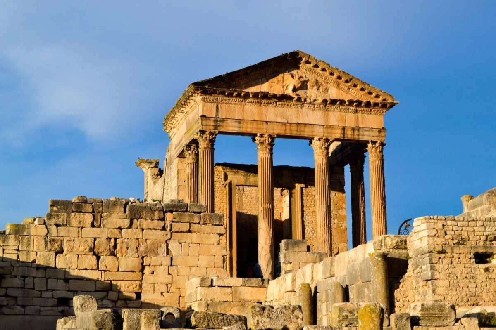

LMAT c'est quoi?
LMAT(abreviation de Learn more about Tunisia) est un site web avec comme sujet la patrimoine
tunisie.
Bien sure se site n'es en aucun cas n'est professionel
LMAT c'est quoi?LMAT(abreviation de Learn more about Tunisia) est un site web avec comme sujet la patrimoine
tunisie. |
| les plat les plus célébres en tunisie | les habits les plus célébre en tunisie | les personnes les plus célébre en tunisie | Les les lieux les plus célébre en tunisie |
 |
.jpg) |
.jpg) |
 |